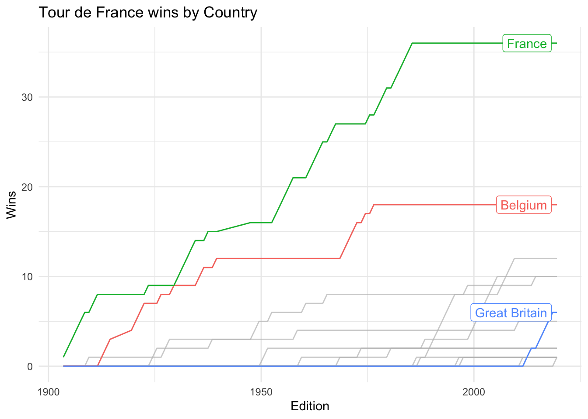
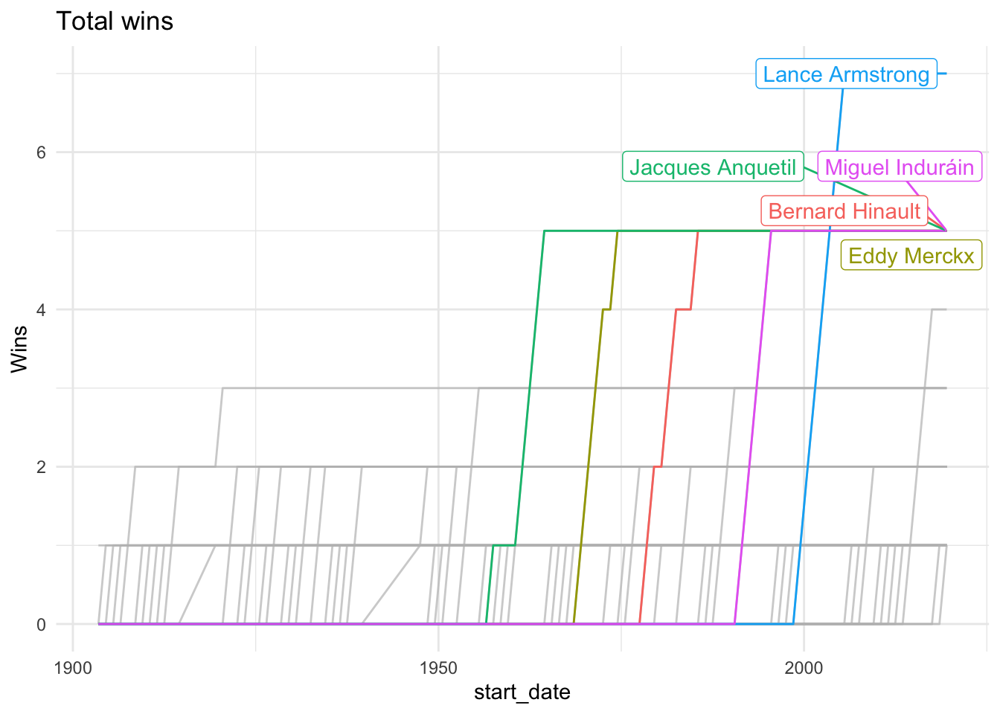
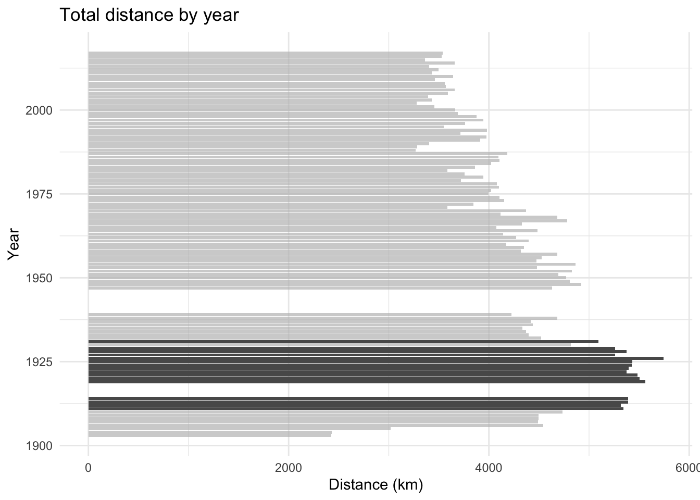

---- Compiling #TidyTuesday Information for 2020-04-07 ----
--- There are 3 files available ---
── Downloading files ───────────────────────────────────────────────────────────
1 of 3: "stage_data.csv"
2 of 3: "tdf_stages.csv"
3 of 3: "tdf_winners.csv"
The Tour de France is the biggest annual sporting event in the world featuring 21 days of bicycle racing and two rest days around France (sometimes starting other countries, including Yorkshire in 2014). There have been 106 editions up to the 2019 race with the first event held 116 years ago in July 1903. During that time the race has evolved. Initially the races were entirely self-supported, meaning you had to carry your own spare tyres and fix any mechanical issues. Additionally, many of the mountain passes had gravel roads instead of the pristine tarmac of modern day. In the 1913 race, Eugène Christophe was hit by a race vehicle on his descent from the Tourmalet, a 2,115m mountain pass in the French Pyrenees. This caused Christophe’s front fork to break which he would be forced to repair himself. He walked 10km to the nearest village and used a forge to render a new fork and thus repair his bicycle. However, Christophe paid a boy to operate the bellows on the forge meaning he received a ten minute penalty! The image below is Christophe during the 1913 tour, credit Bike Race Info.
Eugene Christophe
The modern Tour de France is not so tough, now team cars and neutral service vehicles follow the riders throughout the stage to change wheels, fix mechanicals and hand out food and drinks. Additionally, riders work in teams. Before 1987 the team size was 10 riders and a total of 22 teams for 220 riders. The UCI reduced the team size for grand tours to nine in 1987 and kept that size until 2017. The team size in the grand tours (Tour de France, Vuelta a España and Giro d’Italia) was reduced to eight beginning with the 2018 season. It was thought by some, that teams (particularly Team Sky, now Team Ineos) were dominating the narrative of the race by riding hard on the front, thus neutralising attacks. From cycling news “The Grand Tour organisers have been pushing for a reduction in team sizes in order to open up the races and prevent one team from controlling the race.”
The Tour de France has several competitions running simultaneously. There is one race for the overall title which is called the general classification and is awarded to the rider who completes the full course with the lowest cumulative time. The rider in the lead of the general classification (GC) at the end of the previous days racing is awarded the yellow jersey (introduced in the 1919 edition of the Tour). Each stage is a race in its own right, with stages on offer for different kinds of riders. Flat stages allow recovery for the GC riders and are typically won by sprinters from bunch sprints. Time trial stages can often be won by time trial specialists providing they come early enough in the program (such as a prologue stage before stage 1) such that they are not too tired to perform. The moutain stages of the Pyrenees and Alps are the testing grounds of the GC riders.
There are two other jerseys, the green jersey awarded to the rider who has the most accumulated the most points from stage wins and intermediate sprints. This can reward riders for trying to break away from the pelaton and work hard in a small group battling the wind. The polka-dot jersey is awarded to the best climber, with points being awarded for the first few over key climbs in the race. The final jersey is the white jersey for best young rider, awarded to the rider with the lowest cumulative time under the age of 26. Other prizes include the team classification, which awards a yellow number to the leading team calculated by adding the times of the three best riders of each team per stage. The image below shows the 2018 Tour de France Jersey winners, Pierre Latour in White, Geraint Thomas in Yellow, Julian Alaphilippe in Polka-dot and Peter Sagan in Green.
2018 tour de France Jersey winners
Cumulative wins by nationality
This weeks data consists of TdF winners, stage results and information about each stage. First we will look at the TdF overall winners by nationality.
Code
winners <- tuesdata$tdf_winnerswinners %>%select(start_date, edition, nationality) %>%mutate(year = lubridate::year(start_date), true =TRUE) %>%mutate(nationality = stringr::str_trim(nationality)) %>%pivot_wider(names_from = nationality, values_from = true) %>%mutate_at(vars(France:Colombia), ~if_else(is.na(.x), FALSE, .x)) %>%mutate_at(vars(France:Colombia), cumsum) %>%pivot_longer(names_to ="country", values_to ="cumulative_wins", France:Colombia) %>%ggplot(aes(x = start_date, y = cumulative_wins, group = country, colour = country)) +geom_line() + gghighlight::gghighlight(country %in%c("France", "Belgium", "Great Britain")) +labs(x ="Edition", y ="Wins", title ="Tour de France wins by Country")
Warning: Tried to calculate with group_by(), but the calculation failed.
Falling back to ungrouped filter operation...
label_key: country

France have won the most Tours, unsurprisingly. However France haven’t had a winner since Bernard Hinault in 1985, 35 years ago! On the other hand Britain didn’t have a winner until Bradley Wiggins in 2012 and have since won the yellow jersey a further five times with Chris Froome winner four times and Geraint Thomas winning last for GB in 2018.
Warning: Tried to calculate with group_by(), but the calculation failed.
Falling back to ungrouped filter operation...
label_key: winner

Which was the most difficult edition
How can we characterise the most difficult Tour de France. Here are a few variables which affect the difficulty or could be a proxy for the difficulty of the full tour
Distance covered
Number of stage types (flat, mountain, TT)
Total time
Average Speed
Proportion of finishers
Weather
Paved roads
Some of these will be difficult to quantify - for instance is weather data available for the France in 1903? Can we determine when the mountain passes in the Pyrenees and the Alps were paved? Let’s look at some of these which are present in the data.
First consider the total distance of each Tour.
Code
stages <- tuesdata$tdf_stagesstages %>%mutate(year = lubridate::year(Date)) %>%count(year, wt = Distance, name ="total_distance") %>%ggplot(aes(y = total_distance, x = year)) +geom_col() + gghighlight::gghighlight(total_distance >5000) +coord_flip() +labs(title ="Total distance by year",x ="Year", y ="Distance (km)")

If we look at the composition of the stages we see that the 1903 had only six stages! Let’s calculate the total distance by stage type.
![]()